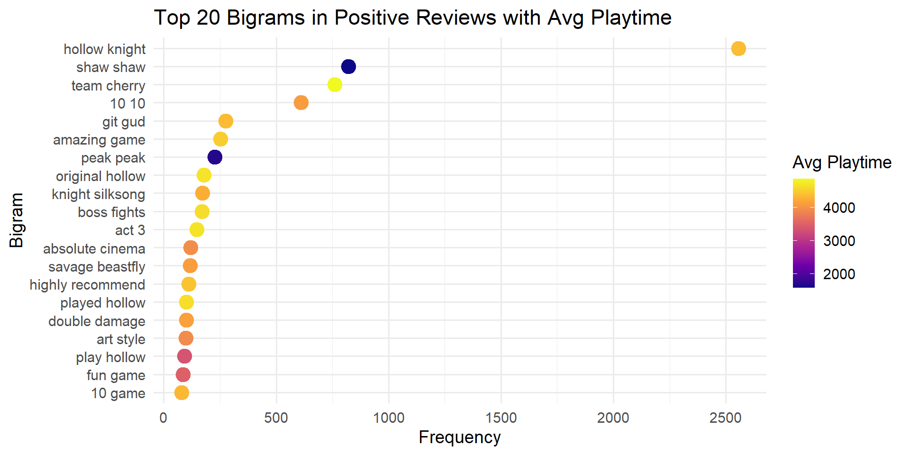
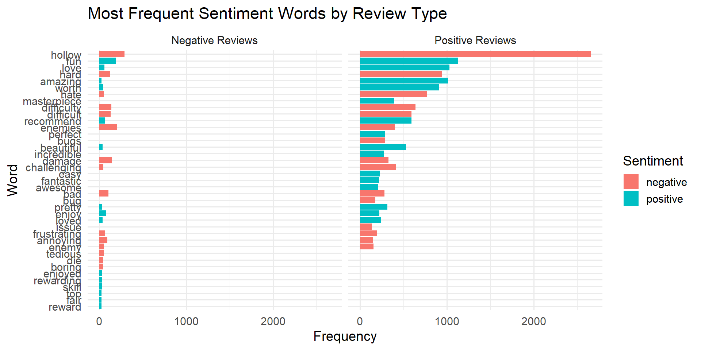
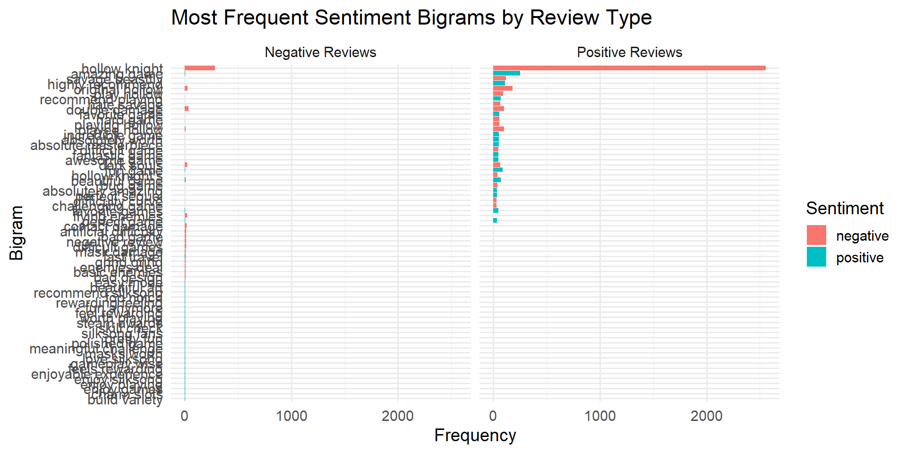
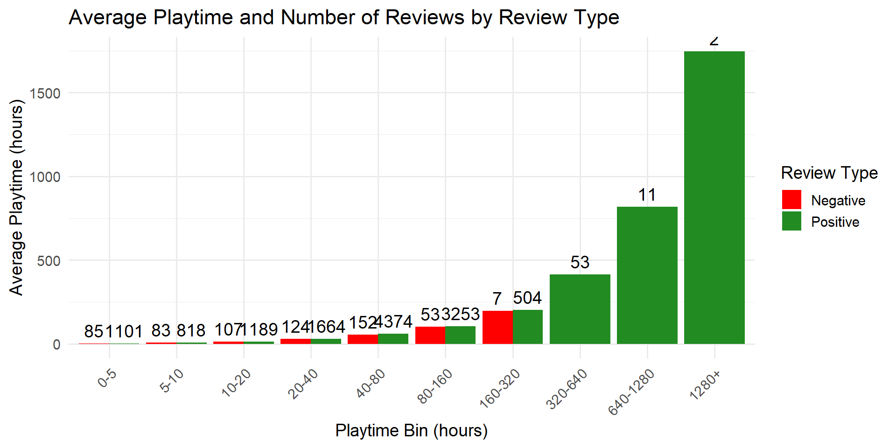

This project analyzes player perception and engagement in Hollow Knight: Silksong using Steam user reviews. The analysis focuses on how player experience and reviewer behavior relate to perceived difficulty, sentiment consistency, gameplay mechanics appreciation, and community feedback.
Only English-language reviews are considered to ensure consistency in text-based analysis.
The dataset consists of publicly available Steam reviews collected using a third-party tool interfacing with Steam review data. Each observation represents a single user review and includes playtime information, recommendation status, and community feedback metrics.
No private or personally identifiable information is used.
The raw dataset contains approximately 37,000 reviews with 22 variables.
Some variables use slash-separated names that complicate manipulation in R. These columns are renamed once to improve readability and maintainability.
df <- df_raw %>%
rename(
author_steamid = `author/steamid`,
playtime_at_review = `author/playtime_at_review`,
playtime_forever = `author/playtime_forever`,
playtime_last_two_weeks = `author/playtime_last_two_weeks`,
num_games_owned = `author/num_games_owned`,
num_reviews = `author/num_reviews`,
last_played = `author/last_played`
)
colnames(df) [1] "author/deck_playtime_at_review" "last_played"
[3] "num_games_owned" "num_reviews"
[5] "playtime_at_review" "playtime_forever"
[7] "playtime_last_two_weeks" "author_steamid"
[9] "comment_count" "language"
[11] "primarily_steam_deck" "received_for_free"
[13] "recommendationid" "review"
[15] "steam_purchase" "timestamp_created"
[17] "timestamp_updated" "voted_up"
[19] "votes_funny" "votes_up"
[21] "weighted_vote_score" "written_during_early_access" To ensure consistency in text analysis, only English-language reviews are retained.
After filtering, the dataset contains 13,580 English-language reviews.
Unix timestamps are converted to date-time format. Missing playtime values are replaced with zero.
df_en <- df_en %>%
mutate(
timestamp_created = as_datetime(timestamp_created),
timestamp_updated = as_datetime(timestamp_updated),
last_played = as_datetime(last_played),
playtime_at_review = replace_na(playtime_at_review, 0),
playtime_forever = replace_na(playtime_forever, 0),
playtime_last_two_weeks = replace_na(playtime_last_two_weeks, 0)
) Min. 1st Qu. Median Mean 3rd Qu. Max.
5 1204 3323 3738 5117 123711 The distribution of playtime at review is right-skewed, with a small number of very high-playtime users.
Only variables relevant to the research objectives are retained.
Rows: 13,580
Columns: 14
$ review <chr> "Beat a boss/area and I don't even feel go…
$ voted_up <lgl> FALSE, TRUE, TRUE, TRUE, TRUE, TRUE, TRUE,…
$ playtime_at_review <dbl> 1469, 976, 2089, 893, 385, 2583, 696, 1412…
$ playtime_forever <dbl> 1469, 976, 2089, 893, 385, 2583, 718, 1443…
$ playtime_last_two_weeks <dbl> 1469, 976, 2108, 893, 385, 2583, 718, 805,…
$ num_games_owned <dbl> 78, 0, 4, 0, 0, 169, 0, 116, 0, 97, 0, 213…
$ num_reviews <dbl> 18, 18, 1, 1, 2, 14, 1, 4, 1, 24, 1, 15, 1…
$ votes_up <dbl> 0, 0, 0, 0, 0, 0, 0, 0, 0, 0, 0, 0, 1, 0, …
$ votes_funny <dbl> 0, 0, 0, 0, 0, 0, 0, 0, 0, 0, 0, 0, 0, 0, …
$ weighted_vote_score <dbl> 0.5000000, 0.5000000, 0.5000000, 0.5000000…
$ steam_purchase <lgl> TRUE, TRUE, TRUE, TRUE, FALSE, FALSE, TRUE…
$ received_for_free <lgl> FALSE, FALSE, FALSE, FALSE, FALSE, FALSE, …
$ written_during_early_access <lgl> FALSE, FALSE, FALSE, FALSE, FALSE, FALSE, …
$ timestamp_created <dttm> 2026-01-06 20:52:54, 2026-01-06 20:44:34,…At this stage, the dataset is fully cleaned and structured for analysis.
The following analyses will be conducted:
The dataset is cleaned, restricted to English-language reviews, normalized for playtime, and ready for text-based and statistical analysis.
Get the most frequent words overall:
# A tibble: 20 × 2
word n
<chr> <int>
1 game 10785
2 hollow 2950
3 knight 2937
4 silksong 2002
5 shaw 1442
6 buy 1371
7 fun 1324
8 time 1264
9 play 1199
10 games 1130
11 love 1091
12 boss 1079
13 hard 1069
14 amazing 1039
15 bosses 1006
16 peak 989
17 worth 958
18 team 900
19 played 888
20 im 885 stop_words_list <- stop_words$word
df_bigrams_clean <- df_bigrams %>%
separate(bigram, into = c("word1", "word2"), sep = " ") %>%
filter(!word1 %in% stop_words_list, !word2 %in% stop_words_list) %>%
unite(bigram, word1, word2, sep = " ")
bigram_counts <- df_bigrams_clean %>%
count(bigram, sort = TRUE)
bigram_counts %>% slice(1:20)# A tibble: 20 × 2
bigram n
<chr> <int>
1 hollow knight 2815
2 NA NA 2598
3 team cherry 823
4 shaw shaw 822
5 git gud 279
6 amazing game 259
7 peak peak 226
8 original hollow 204
9 boss fights 203
10 knight silksong 178
11 double damage 129
12 savage beastfly 120
13 absolute cinema 119
14 highly recommend 112
15 played hollow 107
16 art style 104
17 game ive 102
18 ive played 101
19 play hollow 96
20 fun game 88df_bigrams <- df_text %>%
select(review, voted_up) %>%
unnest_tokens(bigram, review, token = "ngrams", n = 2)
stop_words_list <- stop_words$word
df_bigrams_clean <- df_bigrams %>%
separate(bigram, into = c("word1", "word2"), sep = " ") %>%
filter(!word1 %in% stop_words_list,
!word2 %in% stop_words_list) %>%
unite(bigram, word1, word2, sep = " ")# Add the review ID back (or row number) to track bigrams per review
df_en <- df_en %>% mutate(review_id = row_number())
# Tokenize bigrams and keep review_id
df_bigrams <- df_en %>%
select(review, review_id, voted_up, playtime_at_review) %>%
unnest_tokens(bigram, review, token = "ngrams", n = 2) %>%
filter(bigram != "NA NA")
# Remove stop words in bigrams
stop_words_list <- stop_words$word
df_bigrams_clean <- df_bigrams %>%
separate(bigram, into = c("word1", "word2"), sep = " ") %>%
filter(!word1 %in% stop_words_list, !word2 %in% stop_words_list) %>%
unite(bigram, word1, word2, sep = " ")
# Positive reviews
bigrams_pos <- df_bigrams_clean %>%
filter(voted_up == TRUE)
# Count frequency and compute average playtime per bigram
top_pos_bigrams <- bigrams_pos %>%
group_by(bigram) %>%
summarise(
freq = n(),
avg_playtime = mean(playtime_at_review),
.groups = "drop"
) %>%
arrange(desc(freq)) %>%
slice(1:20)
# Plot
ggplot(top_pos_bigrams, aes(x = reorder(bigram, freq), y = freq, color = avg_playtime)) +
geom_point(size = 5) +
coord_flip() +
scale_color_viridis_c(option = "C") +
labs(
title = "Top 20 Bigrams in Positive Reviews with Avg Playtime",
x = "Bigram",
y = "Frequency",
color = "Avg Playtime"
) +
theme_minimal(base_size = 14)
ggplot(top_sentiment_words,
aes(x = reorder(word, n), y = n, fill = sentiment)) +
geom_col(show.legend = TRUE) +
coord_flip() +
facet_wrap(~ voted_up,
labeller = as_labeller(c(`TRUE` = "Positive Reviews",
`FALSE` = "Negative Reviews"))) +
labs(
title = "Most Frequent Sentiment Words by Review Type",
x = "Word",
y = "Frequency",
fill = "Sentiment"
) +
theme_minimal(base_size = 14)
bing <- get_sentiments("bing")
bigrams_separated <- df_bigrams_clean %>%
separate(bigram, into = c("word1", "word2"), sep = " ")
bigrams_with_sentiment <- bigrams_separated %>%
left_join(bing, by = c("word1" = "word")) %>%
rename(sentiment1 = sentiment) %>%
left_join(bing, by = c("word2" = "word")) %>%
rename(sentiment2 = sentiment)
bigrams_sentiment_final <- bigrams_with_sentiment %>%
mutate(
sentiment = case_when(
sentiment1 == sentiment2 ~ sentiment1,
is.na(sentiment1) & !is.na(sentiment2) ~ sentiment2,
!is.na(sentiment1) & is.na(sentiment2) ~ sentiment1,
TRUE ~ NA_character_
),
bigram = paste(word1, word2)
) %>%
filter(!is.na(sentiment))
top_sentiment_bigrams <- bigrams_sentiment_final %>%
group_by(voted_up, sentiment, bigram) %>%
summarise(n = n(), .groups = "drop") %>%
group_by(voted_up, sentiment) %>%
slice_max(n, n = 15) %>%
ungroup()ggplot(top_sentiment_bigrams,
aes(x = reorder(bigram, n), y = n, fill = sentiment)) +
geom_col(show.legend = TRUE) +
coord_flip() +
facet_wrap(
~ voted_up,
labeller = as_labeller(c(
`TRUE` = "Positive Reviews",
`FALSE` = "Negative Reviews"
))
) +
labs(
title = "Most Frequent Sentiment Bigrams by Review Type",
x = "Bigram",
y = "Frequency",
fill = "Sentiment"
) +
theme_minimal(base_size = 14)
library(ggplot2)
library(dplyr)
# Bin playtime (in hours)
df_en <- df_en %>%
mutate(playtime_hours = playtime_at_review / 60,
playtime_bin = cut(playtime_hours,
breaks = c(0, 5, 10, 20, 40, 80, 160, 320, 640, 1280, Inf),
labels = c("0-5", "5-10", "10-20", "20-40", "40-80",
"80-160", "160-320", "320-640", "640-1280", "1280+"),
include.lowest = TRUE))
# Aggregate for plotting
df_bin_summary <- df_en %>%
group_by(playtime_bin, voted_up) %>%
summarise(
avg_playtime = mean(playtime_hours),
n_reviews = n(),
.groups = "drop"
)
# Plot
ggplot(df_bin_summary, aes(x = playtime_bin, y = avg_playtime, fill = voted_up)) +
geom_col(position = "dodge") +
geom_text(aes(label = n_reviews), position = position_dodge(width = 0.9), vjust = -0.5) +
scale_fill_manual(values = c("red", "forestgreen"), labels = c("Negative", "Positive")) +
labs(
title = "Average Playtime and Number of Reviews by Review Type",
x = "Playtime Bin (hours)",
y = "Average Playtime (hours)",
fill = "Review Type"
) +
theme_minimal(base_size = 14) +
theme(axis.text.x = element_text(angle = 45, hjust = 1))
Observation from Playtime vs Review Type:
Most reviews are positive, confirming the general community satisfaction.
Negative reviews tend to increase with playtime until ~40 hours, then drop sharply.
After 160 hours, no negative reviews exist, which makes sense: players who dislike the game don’t stick around.
This suggests that difficulty spikes (early bosses or mechanics) may trigger early negative sentiment, but experienced players either adapt or enjoy the challenge.
Plot Support:
Playtime bins show where negative reviews cluster.
Average playtime of reviewers with negative reviews is lower than for positives beyond the early game.
Insight:
Hollow Knight: Silksong’s difficulty is enough to challenge new players, but players who persevere past the ~40-hour mark overwhelmingly enjoy it.
Early-game difficulty is the main friction point.
Observation from Bigram Sentiment Analysis:
“Savage beastfly” is the second most frequent bigram after the game title.
Despite its negative connotation (hard enemy), it appears more in positive reviews, suggesting players value its challenging nature.
This indicates a community that celebrates difficulty as a rewarding feature rather than a negative point.
Plot Support:
The sentiment bigram plot shows “savage beastfly” in the positive review facet.
Frequency aligns with challenge discussion across reviews.
Insight:
Difficulty-related content can generate positive engagement if the player base enjoys mastering challenges.
This reinforces the trend seen in playtime: challenges cause temporary negative sentiment but are ultimately part of the rewarding experience.
Observations from Bigram & Sentiment Analysis:
Challenge-related terms:
“savage beastfly”, “double damage”, “flying enemies”, “contact damage” appear frequently.
“dark souls” shows up, emphasizing the game’s reputation for high difficulty.
Sentiment nuance:
Even tough enemies (“savage beastfly”) often appear in positive reviews, suggesting players enjoy the challenge.
Phrases like “hate savage” appear in negative reviews, highlighting frustration at early difficulty spikes.
Damage & health mechanics:
Players repeatedly comment on double damage and low health pool (start with 5 masks), which makes mistakes punishing early on.
Positive reviews still reference these, showing that mastering these mechanics is satisfying.
Insights:
Difficulty is a core part of engagement: the game punishes mistakes, but players who enjoy mastering mechanics write positive reviews.
Flying enemies & contact damage are key friction points for new players but contribute to rewarding skill expression for experienced players.
Positive feedback often frames difficulty as fun, while negative feedback peaks when players feel overwhelmed (e.g., before reaching 7 masks).
Plot Support:
Bigram frequency plots can highlight these mechanics:
Compare positive vs negative reviews for “double damage”, “savage beastfly”, “flying enemies”.
Could use a stacked bar plot: x-axis = bigram, y-axis = count, fill = review type.
# Define challenge-related bigrams
challenge_bigrams <- c("savage beastfly", "double damage", "flying enemies",
"contact damage", "dark souls")
# Create bigrams while keeping review & playtime info
df_bigrams_with_review <- df_text %>%
select(review, voted_up, playtime_at_review) %>% # keep playtime
mutate(playtime_hours = playtime_at_review / 60) %>% # convert to hours
unnest_tokens(bigram, review, token = "ngrams", n = 2) %>%
separate(bigram, into = c("word1", "word2"), sep = " ") %>%
filter(!word1 %in% stop_words$word, !word2 %in% stop_words$word) %>%
unite(bigram, word1, word2, sep = " ")
# Summarize challenge bigrams with count and avg playtime
bigrams_challenge_playtime <- df_bigrams_with_review %>%
filter(bigram %in% challenge_bigrams) %>%
group_by(bigram, voted_up) %>%
summarise(
count = n(),
avg_playtime = mean(playtime_hours, na.rm = TRUE),
.groups = "drop"
) %>%
mutate(voted_up = ifelse(voted_up, "Positive Reviews", "Negative Reviews"))
# Plot: bars for frequency, points for average playtime
ggplot(bigrams_challenge_playtime,
aes(x = reorder(bigram, count), y = count, fill = voted_up)) +
geom_col(position = "dodge") +
geom_point(aes(y = avg_playtime, color = "Avg Playtime"),
size = 4, position = position_dodge(width = 0.9)) +
coord_flip() +
scale_fill_manual(values = c("Positive Reviews" = "forestgreen",
"Negative Reviews" = "firebrick")) +
scale_color_manual(values = c("Avg Playtime" = "dodgerblue")) +
labs(
title = "Challenge-Related Bigrams: Frequency and Average Playtime",
x = "Bigram",
y = "Frequency / Avg Playtime (hours)",
fill = "Review Type",
color = ""
) +
theme_minimal(base_size = 14)Early-game difficulty spikes trigger initial negative sentiment, but players who persist tend to adapt and enjoy mastering mechanics.
Negative reviews cluster around ~40 hours of playtime, showing that frustration is temporary and tied to skill acquisition.
After ~160 hours, negative reviews drop to zero — players either “git gud” or stop playing, which is exactly how the game maintains its tension and engagement.
Challenge-related mechanics such as “savage beastfly”, double damage, flying enemies, and references to Dark Souls show up in both positive and negative reviews.
Even tough enemies are frequently mentioned in positive reviews, indicating that difficulty itself is part of the fun.
Players recognize that punishing mechanics reward skill mastery, making failure feel meaningful rather than frustrating.
Players celebrating difficult encounters, like beating a hard enemy, often write positive reviews, reinforcing a culture of overcoming challenges.
Sentiment analysis shows that frustration exists but is largely contextual — tied to specific mechanics rather than the game overall.
Silksong designs difficulty to be consistent and meaningful, giving players a clear risk-reward loop: succeed by improving, or fail and learn.
This reinforces the notion that skillful play and perseverance are core to player enjoyment, and the game’s challenge is intentionally central to engagement.
Hollow Knight: Silksong achieves high player satisfaction, with overwhelmingly positive reviews overall.
Difficulty is consistent throughout the game — it doesn’t plateau. Players either adapt and overcome or struggle, making failure meaningful.
Challenge-related mechanics like “savage beastfly”, double damage, and flying enemies are central to both criticism and praise, showing that players engage deeply with skill-based obstacles.
Player experience evolves with playtime: early frustration turns into mastery, reinforcing the rewarding nature of the game’s mechanics.
Overall, the game’s “git gud or lose” design ensures that difficulty is fun, skill expression is meaningful, and long-term engagement is driven by challenge rather than grind.